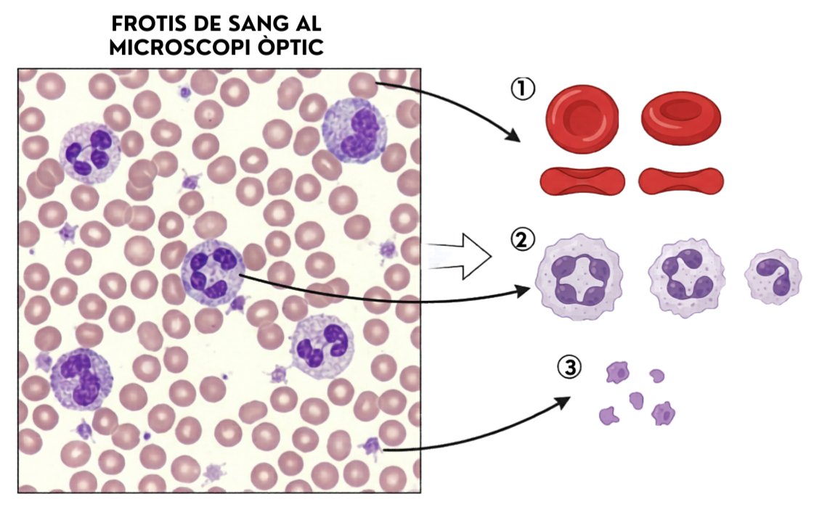
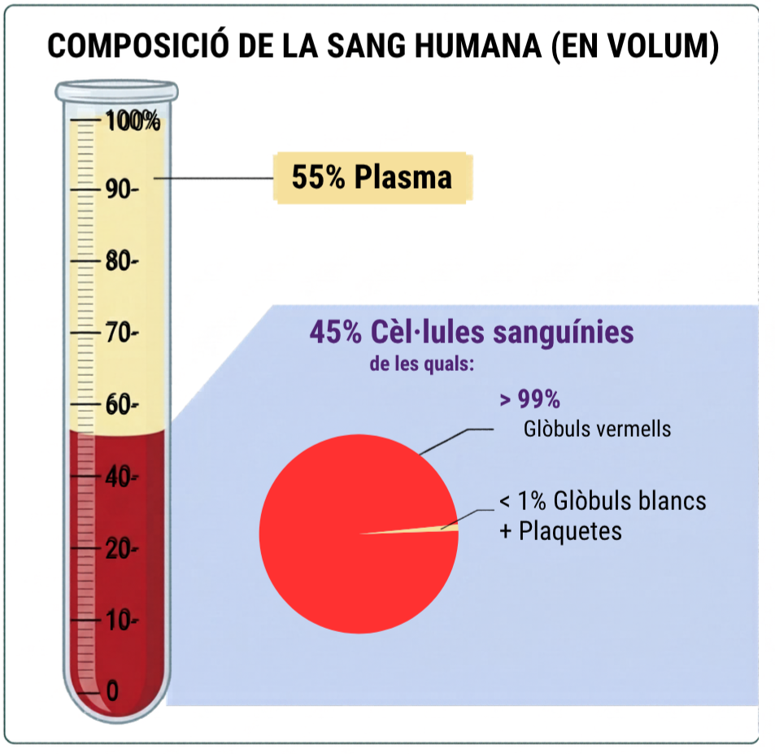
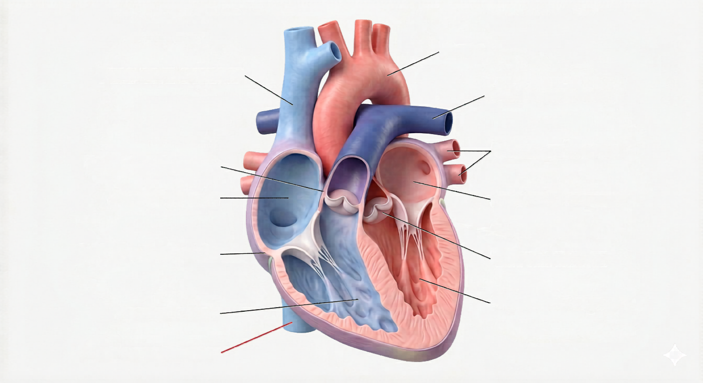
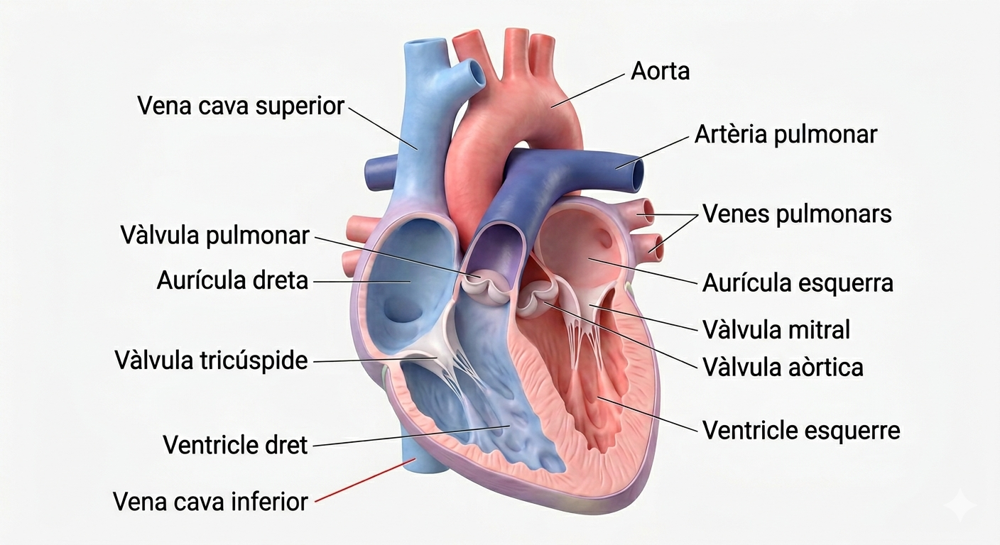
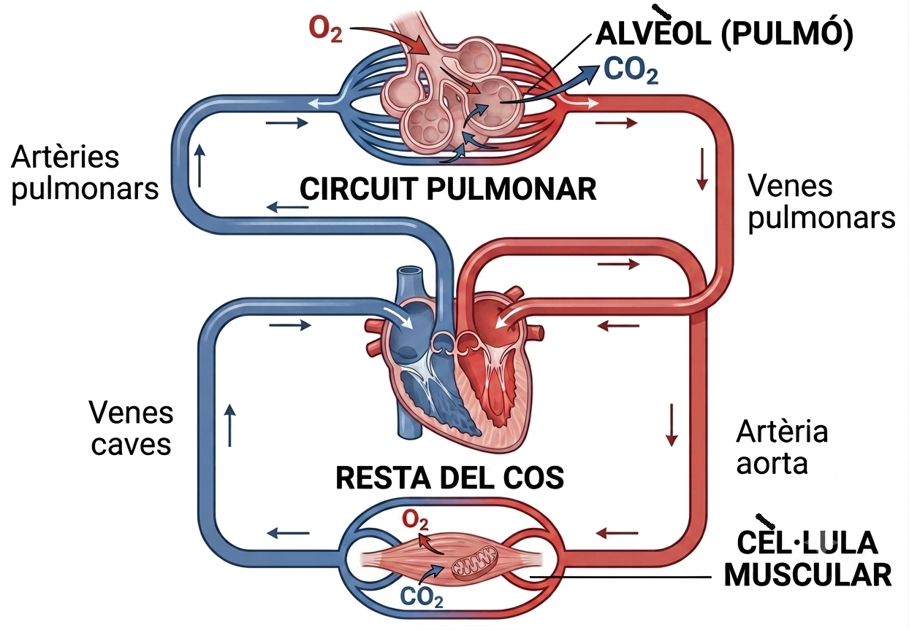

Escriu tot el que creus que la sang transporta pel cos (oxigen, nutrients, cèl·lules de defensa, deixalles…):
Per començar: "La sang transporta…"
De cada 100 targetes, quantes creus que seran eritròcits (glòbuls vermells)? I quants leucòcits?

Imatge IE Temple (ús escolar)
Observa la imatge i identifica:
Tria d'aquí: eritròcits · leucòcits · plaquetes
Cèl·lula bicòncava: cèl·lula aplanada i enfonsada pel centre per les dues cares (com un disc xafat al mig). Aquesta forma li dona més superfície per agafar i deixar oxigen. És la forma dels eritròcits (glòbuls vermells).
Nucli lobulat: nucli dividit en diversos lòbuls (trossos units) en comptes de ser rodó. És típic de molts leucòcits (glòbuls blancs), les cèl·lules de defensa.
Proporcions reals (contrasta-ho amb les targetes):

99% glòbuls vermells, <1% glòbuls blancs i plaquetes)" onerror="this.style.display='none'">Imatge IE Temple (ús escolar)
Per quina raó la sang sembla completament vermella si el 55% és de color groc (plasma)?
Per començar: "La sang sembla vermella perquè els eritròcits tenen…"

Imatge pròpia IE Temple
● Sang desoxigenada ● Sang oxigenada
El ventricle esquerre té la paret molt més gruixuda que el dret. Per quina raó?
| Cavitat / Estructura | Rep sang de… | Envia sang a… |
|---|---|---|
| Aurícula dreta | Venes caves (tot el cos) | |
| Ventricle dret | Art. pulmonar → pulmons | |
| Aurícula esquerra | Venes pulmonars (pulmons) | |
| Ventricle esquerre | Artèria aorta → tot el cos |
| Tricúspide | Entre aurícula i ventricle | 3 làmines |
| Mitral (bicúspide) | Entre aurícula i ventricle | 2 làmines |
| Semilunars (×2) | A la sortida dels ventricles — eviten el reflux | 3 làmines |
🔊 El so "lub-dub" correspon a:
📖 Per llegir: El tabic interventricular és la paret que separa els dos ventricles. Si hi ha un forat (CIV), la sang oxigenada i la desoxigenada es barregen, i el cos rep menys oxigen del normal. Quins símptomes esperes? (marca'ls)
Tapa aquesta imatge mentre treballes. Quan hagis posat totes les etiquetes pel teu compte, compara-les amb el cor etiquetat i corregeix els errors amb un altre color.


↓
Aorta
↓
Tot el cos
(músculs, òrgans, cervell)
↓
Intercanvi O₂ / CO₂
↓
Venes caves
↓
Cor dret
gran circ. ALTA
petita circ. BAIXA
(protegeix els alvèols)
↓
Art. pulmonar
↓
Pulmons
(alvèols: O₂ entra, CO₂ surt)
↓
Sang oxigenada
↓
Venes pulmonars
↓
Cor esquerre
Comença: «Al full de dalt veig que la circulació gran té una pressió…»
Comença: «Per quina raó la circulació petita (cap als pulmons) va a pressió baixa?…»
Comença: «Els alvèols pulmonars són molt fins i delicats, així que…»
Avui tu també has calculat coses del teu cos sense veure-les directament (per exemple, com funciona la doble circulació a partir d'un diagrama). Creus que es pot entendre com funciona un òrgan sense obrir-lo, només raonant i observant senyals de fora com el pols? Per quina raó?
Comença: «Crec que…»
El "rang de referència" és el marge de valors normals en una persona sana. Si el valor del Marc és més baix que el rang, marca "Baix"; si hi cau dins, marca "Correcte". La fila de l'Hemoglobina ja està feta com a exemple.
El Marc té 9,2 g/dL i el rang normal és 13,5–17,5 g/dL. Com que 9,2 és més petit que 13,5, és Baix.
| Paràmetre | Valor del Marc | Rang de referència | Nivell? |
|---|---|---|---|
| Hemoglobina (Hb) | 9,2 g/dL | 13,5–17,5 g/dL | Baix ✓ Correcte |
| Eritròcits | 3,8×10⁶/µL | 4,5–5,5×10⁶/µL | Baix Correcte |
| Ferro sèric | 38 µg/dL | 60–180 µg/dL | Baix Correcte |
| Glucosa (control) | 94 mg/dL | 70–100 mg/dL | Baix Correcte |
Pista: si un valor és "Baix", no cal escriure res més ara — a la propera activitat ho explicaràs tot junt.
Paraules per omplir els buits: ferro · hemoglobina · oxigen (O₂)
La peça que falla és el perquè el ferro baix provoca que la baixi, i per tant els músculs reben menys → fatiga precoç.
Diagnòstic: anèmia ferropènica. Tractament: suplements de ferro + vitamina C (millora l'absorció intestinal del ferro).
Mesura el teu pols en repòs (sense haver fet exercici l'última hora). Posa els dits índex i mig al coll o al canell, compta les pulsacions durant 30 segons i multiplica per 2. Anota el resultat i porta'l a la S4.
El meu pols en repòs: ______ ppm · Hora de la mesura: ______
⏱️ 2 minuts · Necessites un rellotge i els teus propis dits · No es pot fer amb IA.